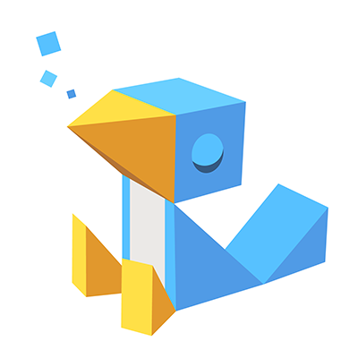

ビジョナリートーク：XR作戦会議～「デジタルとフィジカルの融合した世界」への道をどうやって作るか？～
講演情報
| 資料公開予定 | 予定あり |
|---|---|
| スクリーンショット撮影可否 | 可 |
| SNS投稿可否 | 可 |
講演概要
「デジタルとフィジカルの融合した世界」を実現する技術として期待されているVR/AR。未来へと伸びる長い弧を見据え、一段ずつ、着実に階段を上ってきたその歩みは、2020年に図らずも大きな着火点を迎えました。
COVID-19は、私たちの「現実」に対する考え方を大きく揺さぶっています。コミュニケーションは対面からリモートへと撤退し、イベントという場は縮退を余儀なくされました。これまで以上に、「デジタルとフィジカルの融合した世界」が求められています。
XR Kaigi 2020の基調講演となるビジョナリートークでは、フィジカルとデジタル、それぞれの立場からこの課題に取り組んでいる２名のキーパーソンが登壇。ディスカッションを繰り広げ、ビジョンを共有する、未来に向けた作戦会議をお届けします。
本基調講演は無料です。どなたでもご参加いただけます。
- YouTube Live
- https://www.youtube.com/watch?v=iGBhjz8HXfg
- cluster
- https://cluster.mu/e/953be4fb-4b2b-408b-b902-073dc1e25fec
講演者詳細
-
1972年、千葉県出身。1996~2000年、安藤忠雄建築研究所、2002~2006年、SHoP Architects(ニューヨーク)を経て、2007年より東京と台北をベースに建築デザイン事務所 noiz を蔡佳萱と設立、2016年に酒井康介が加わり共同主宰。2017年、「建築・都市×テック×ビジネス」をテーマにした領域横断型プラットフォーム gluonを金田充弘と共同で設立。コンピューテーショナルデザインを積極的に取り入れた設計・開発・リサーチ・コンサルティング等の活動を、建築やインテリア、都市、ファッションなど、多分野横断型で展開している。現在、東京藝術大学アートメディアセンター非常勤講師、慶應義塾大学SFC非常勤講師、芸術情報大学院大学(IAMAS)非常勤講師、東京大学生産技術研究所客員教授(2020年~)。「WIRED Audi INNOVATION AWAED 2016」受賞イノヴェイター。2025年大阪・関西国際博覧会 誘致会場計画アドバイザー(2017年~2018年)。著書に「Rhinoceros+Grasshopper 建築デザイン実践ハンドブック」(共著、2010年、彰国社)など。
-

京都大学理学部で宇宙論と量子コンピュータを研究。同大学院中退後、３年間のひきこもり生活を過ごす。2015年、VR技術を駆使したスタートアップ「クラスター」を起業し、バーチャルSNS「cluster」を公開。経済誌ForbesJAPANの「世界を変える30歳未満30人の日本人」に選出。
-

VRジャーナリスト。VRが人の知覚する現実を認識を進化させ、社会を変えていく無限の可能性を感じ、身も心も捧げている。VR/AR業界の情報集約、コンサルティングが専門。